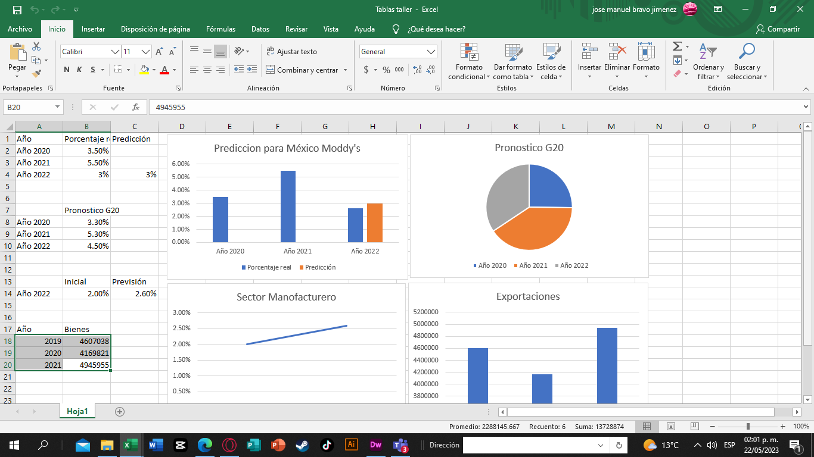
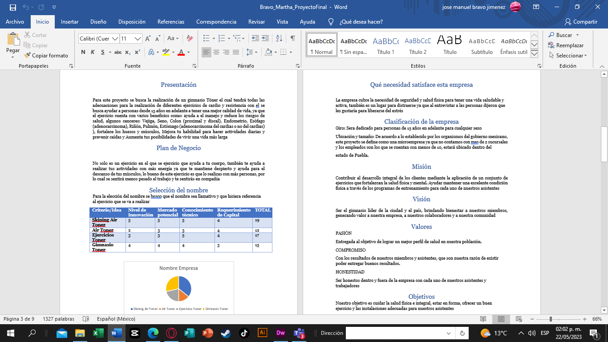
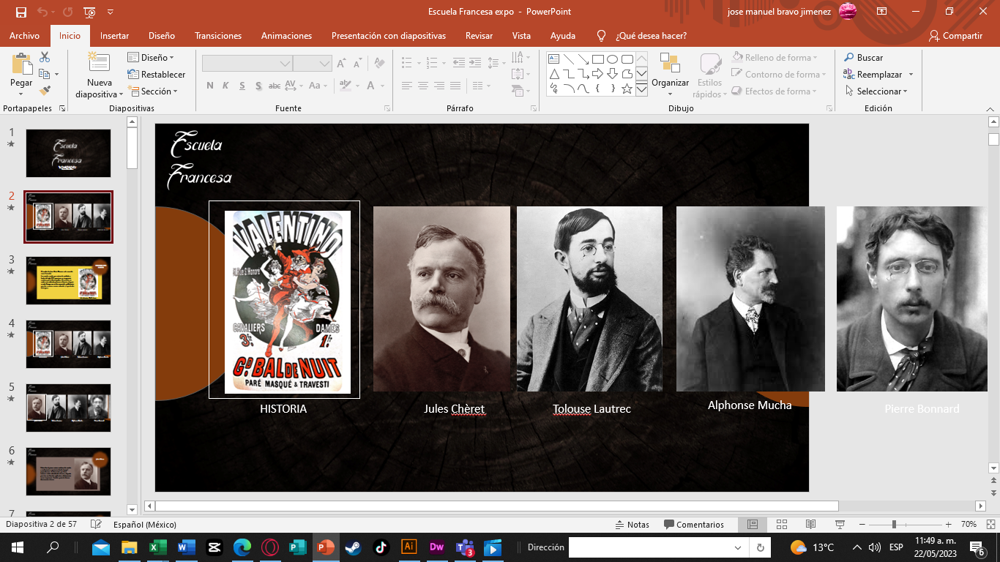
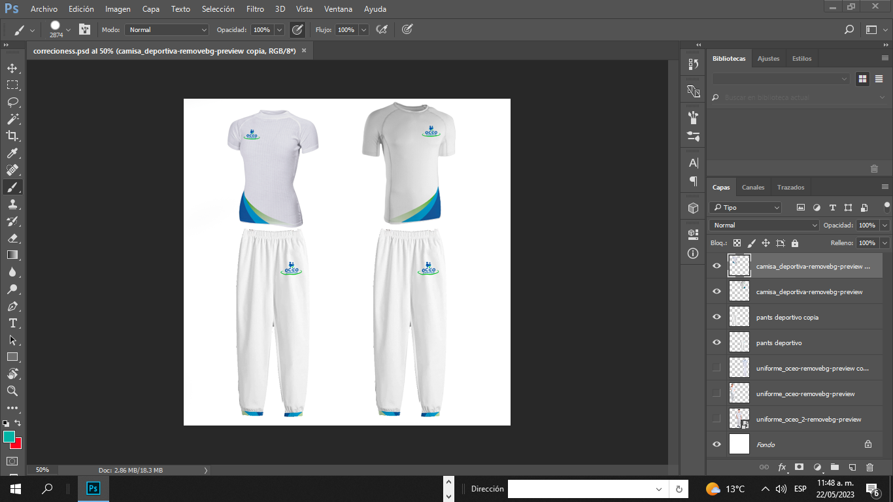
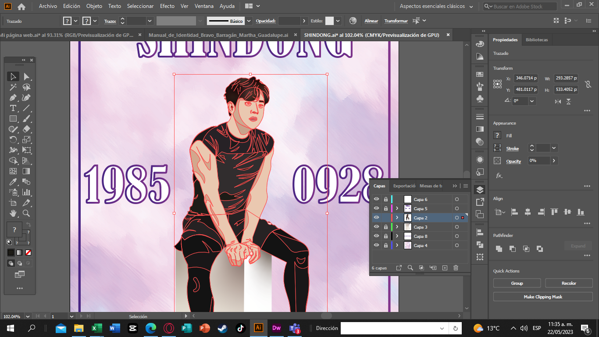
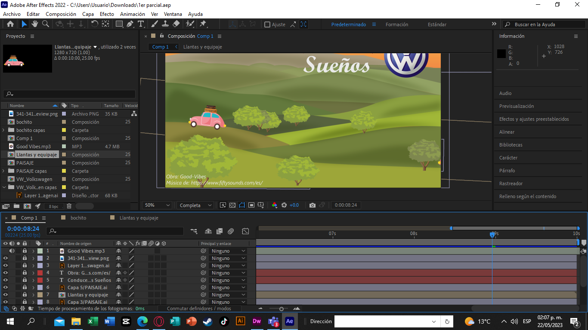
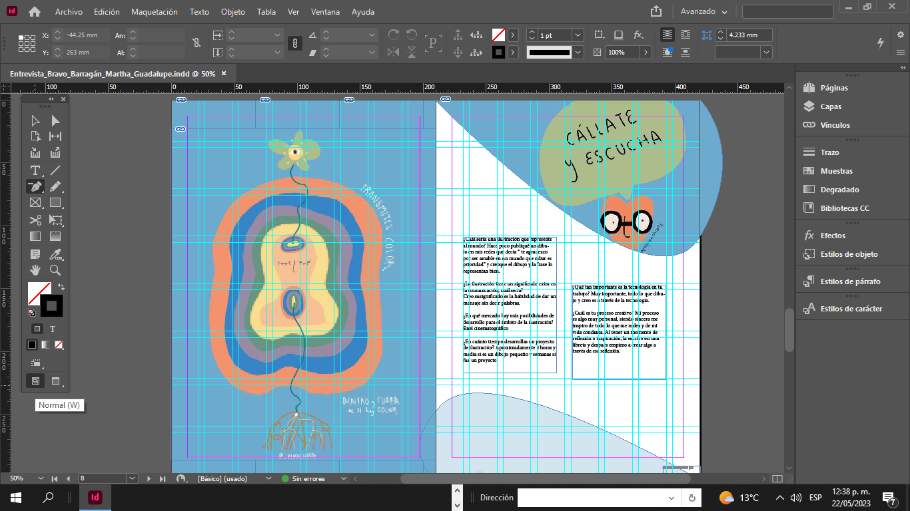

Excel
Manejo el uso de excel en un 70% ya que se realizar cotizaciones calculando mediante el uso de formulas , tablas, graficas, registro y manejo de datos
Word
El uso de word en un 60%, manejando el uso de las herramientas que esta propociona para la realización de trabajos, proyectos, manuales, ediciones, vinculos, videos, traducción del documento o parrafos
Power Point
Tengo el uso de Power point en un 80%, realizar un diseño desde 0, podiendo realizar presentaciones mediante los distintos atajos que esta proporciona logrando adjuntar imagenes, videos, vinculos, hipervinculos, graficos, animaciónes, transiciones
Photoshop
El uso de photoshop que utilizo es el 50% pudiendo realizar correciones en fotografias, mockups, ilustraciones, documentos, diseño de banners
Illustrator
El uso de Illustrator que manejo es del 70% logrando realizar creación de logotipos, ilustraciones, diseño de banners, iconos, señaletica, infografias, efecto 3d, vectorizar, creación de documentos, presentaciones, diseño de presentación
After Efects
Manejando el uso del software en un 30% logrando realizar videos, mediante ilustraciones, imagenes y vectores con el uso de importacion de archivos editables de Ai, apoyandome con las herramientas que esta proporciona
Indesing
Manejando el uso del software en un 30% logrando realizar documetntos desde 0, teniendo paginación, cotización, etc...
